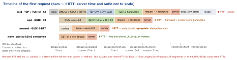

networking · folio
In one line: Before the first response byte, the phone may have to wake its radio, resolve the name, open TCP, negotiate TLS and send the request — each step costs a network round trip (RTT). Cold over TCP + TLS 1.3: 4 RTT + server time; HTTP/3: 3; a reused connection: 1. Every latency trick removes one of these rows.
Download PDF Print view LaTeX source


The nine steps
- Parse: scheme, host, port, path (non-ASCII host → Punycode). A browser applies HSTS (incl. preload):
http→httpsbefore any packet; an app’s ATS refuses cleartext. - Caches first: a fresh
URLCachehit returns with no network (resourceFetchType == .localCache); an open connection to the same origin in the session’s pool skips steps 3–6 (isReusedConnection). - Radio: an idle modem (LTE
RRC_IDLE; 5G addsRRC_INACTIVE) must be promoted toCONNECTEDbefore the first packet — latency first, the energy tail afterwards. - DNS: stub resolver (
mDNSResponderon Apple) cache → recursive resolver (carrier, 1.1.1.1, Private Relay) → root → TLD → authoritative. A, AAAA and, since iOS 14, HTTPS (type 65) records are asked in parallel; answers live for their TTL. - Connect: Happy Eyeballs (RFC 8305) prefers IPv6, starts IPv4 250 ms later if it is slow; TCP 3-way handshake = 1 RTT.
- TLS 1.3: ClientHello (SNI, ALPN, key_share) → Finished = 1 RTT; chain + hostname checked; ALPN picks
h2. - Request: HTTP/2
HEADERS(HPACK) on a new stream → CDN edge / load balancer → app server → cache / DB. TTFB = 1 RTT + server think time. - Response: status + headers (
Cache-Control,ETag,Content-Encoding) → decompress → stored inURLCache→ your code: status, decode, main actor. - Render: browser — DOM + CSSOM, JS, layout, paint, composite; each sub-resource is another (pooled) request. App — decode off-main, diff, UI on main, pre-decode images.
Example — where did the time go?
func urlSession(_ s: URLSession, task: URLSessionTask,
didFinishCollecting m: URLSessionTaskMetrics) {
func ms(_ a: Date?, _ b: Date?) -> String {
guard let a, let b else { return "-" } // skipped step
return "\(Int(b.timeIntervalSince(a) * 1000))" }
for t in m.transactionMetrics { // redirects = several
print(t.networkProtocolName ?? "?", t.isReusedConnection,
"dns", ms(t.domainLookupStartDate, t.domainLookupEndDate),
"tcp", ms(t.connectStartDate, t.secureConnectionStartDate),
"tls", ms(t.secureConnectionStartDate, t.secureConnectionEndDate),
"ttfb", ms(t.requestStartDate, t.responseStartDate),
"body", ms(t.responseStartDate, t.responseEndDate),
t.isCellular, t.remoteAddress ?? "") // v6 or v4?
}
}Where the milliseconds go — and the fix
| step | cost | how to remove it |
|---|---|---|
| radio | promotion | batch; prefetch while the radio is up |
| DNS | 1 RTT (miss: more) | fewer hostnames; honour TTLs; HTTPS record |
| TCP | 1 RTT | reuse: one shared session, h2/h3 multiplexing |
| TLS | 1 RTT (1.2: 2) | TLS 1.3 resumption; 0-RTT for idempotent GETs |
| request | 1 RTT + server | CDN edge near the user; cache; fewer serial calls |
| body | slow start | small first screen (<≈14 KB), compression |
| render | CPU | decode off-main, downsample images, paginate |
The mobile angle
- Sequential calls multiply RTTs: login → profile → feed = 3 round trips minimum. Parallelise (
async let) or aggregate server-side (BFF, GraphQL). - Network switch (Wi-Fi → cellular) kills every TCP connection: back to cold. HTTP/3 migrates by connection ID;
multipathServiceType = .handover(MPTCP) keeps TCP alive. - Lab ≠ field: the simulator uses the Mac’s network. Measure on a device, on cellular, and collect
URLSessionTaskMetricsin production (sampled). - The first request after launch pays everything: warm the connection with the first needed call, not a dummy ping.
Traps
- “HTTPS is one handshake” — TCP then TLS: two RTTs before the request (QUIC merges them).
- Timing with
Date()arounddata(for:)mixes queueing, DNS and server time — use the metrics. - A pooled connection may already be closed by the server:
-1005(connection lost). URLSession retries it only for idempotent methods — a POST surfaces the error (QA1941). - “DNS is instant” — a cold miss walks root → TLD → authoritative; bad Wi-Fi DNS stalls everything.